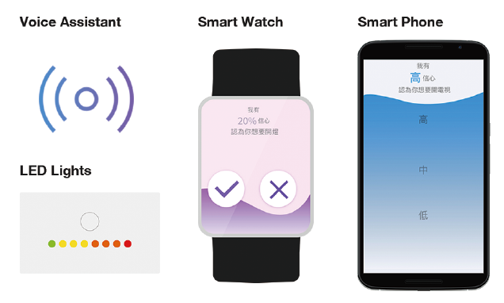
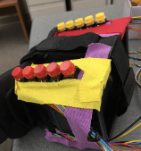

About Me
I am 1st-year master student in Computer Science at Dartmouth College, advised by Porf. Xing-Dong Yang. Previously, I received my BS in Electrical Engineering at National Cheng Kung University in 2018. After that I was a research assistant at National Chiao Tung University, where I participated in many amazing HCI projects with Prof. Da-Yuan Huang and Prof. Yung-Ju Chang.
My research interest lies in developing novel input/output techniques by integrating hardware and software. Specifically, I try to 1) augment haptic output and input expressivity on existing accessories and 2) develop software toolkits to assist novices in circuit/breadboard prototyping.
I am actively seeking for research internship or visiting student position in 2020 summer.
PUBLICATIONS

CHI ' 20
Exploring the Design Space of User-System Communication for Smart-home Routine Assistants (10 pages) (co-primary*)
Ruei-Che Chang* , Yi-Shyuan Chiang*, Yi-Lin Chuang, Shih-Ya Chou, Hao-Ping Lee, I-Ju Lin, Jian Hua Jiang Chen, Yung-Ju Chang
Contribution: Design experiment workflow using WoZ and User Enactment, and execute the experiment as experimenter. Analyze qualitative data with co-authors using Affinity Diagram and write some parts of paper.

CHI ' 20
Glissade: Generating Balance Shifting Feedback to Facilitate Auxiliary Digital Pen Input (10 pages)
Kai-Chieh Huang, Chen-Kuo Sun, Da-Yuan Huang, Yu-Chun Chen, Ruei-Che Chang , Shuo-wen Hsu, Chih-Yun Yang, Bing-Yu Chen
Contribution: Programming 6 applications (including games and daily usage of tablet) by Unity3D, C# discussion about the modification after being rejected first time.

UIST' 19
Masque: Exploring Lateral Skin Stretch Feedback on the Face with Head-Mounted Displays (10 pages)
MANUSCRIPTS IN PREPARATION

A Computer Vision Based Toolkit to Assist Novices in Learning Circuit/Breadboard Prototyping (authorship is in pending *)
Ruei-Che Chang* , Te-Yen Wu*, Zheer Xu*, Xing-Dong Yang*
Contribution: Project discussion and ideation. Building the entire system, including python server with computer vision algorithms for different tasks and android client to function and show the circuit visualization and tooltips overlayed on the screen.

TanGo: Exploring Expressive Tangible Interactions on Head-Mounted Displays (co-primary*)
Ruei-Che Chang* , Chi-Huan Chiang*, Chih-Yun Yang, Shuo-wen Hsu, Da-Yuan Huang
Contribution: Project discussion and ideation. All parts of programming of TanGo, including arduino and two applications. Writing whole paper.
side projects

Final Project in Topics in HCI (CS189)
TextBox: Exploring Text-entry on Head-Mounted Displays
Instructor: Prof. Xing-Dong Yang

Undergraduate Project
Using Three-Step-Search to Realize Tracking System on the Pan-Tilt Platform
Advised by Prof. Ming-Yang Cheng

Final Project in Image Processing
GUI Toolkits For Rapidly Processing Biopsy Image
Advised by Prof. Pau-Choo Chung